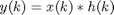

Contents
FreqSelectClass
Parent class: AttributeClass. Frequency selectivity of RF/analog blocks.
Properties
Methods
Flt
This member is a concatenation of a filter nominator and denominator. Best recommended to be used with MATLAB filter design functions.
Init
This member stores the current state of the filter. The object constructor initialize it to empty structure.
FreqSelClass@FreqSelClass
OBJ=FreqSelClass(NAME)
Constructor of frequency selectivity attribute. The inherited Name property is set to NAME and the frequency selectivity object is returned in OBJ.
OBJ=FreqSelClass(NAME,FLT)
Constructor of frequency selectivity attribute. The inherited Name property is set to NAME, input FLT is copied into the Flt property and the frequency selectivity object is returned in OBJ.
effect@FreqSelClass
OUTP=effect(OBJECT,INP)
The INP signal is recommended to be an object of SignalClass. The frequency selectivity is implemented with:

The return value OUTP is also an object of SignalClass. The method applies the frequency selectivity attribute.